MethylScoreAML Px Development#
Load Data#
Show code cell source
import pandas as pd
input_path = '../Data/Intermediate_Files/'
output_path = '../Data/Processed_Data/'
# read top CpGs selected from previous code file (univariate cox-ph EWAS)
ewas_top_cpgs = pd.read_csv(output_path+'ewas_dmr/ewas_top_cpgs.csv', index_col=0)
# Load clinical data
discovery_clinical_data = pd.read_csv(input_path+'discovery_clinical_data.csv',
low_memory=False, index_col=0).loc[ewas_top_cpgs.index]
# save clinical data
discovery_clinical_data.to_excel('data/ewas_top_cpgs_clinical_data_discovery.xlsx')
print(
f' Dataset (df) contains {ewas_top_cpgs.shape[1]} columns (5mC nucleotides/probes) and {ewas_top_cpgs.shape[0]} rows (samples).')
Dataset (df) contains 167 columns (5mC nucleotides/probes) and 924 rows (samples).
Standardize Data#
Standardize the data so that mean becomes 0 and standard deviation becomes 1.
This is done to avoid biasing the model towards features with large values.
Show code cell source
def standardize_data(df, reference_df):
"""Standardize data using mean and standard deviation of reference dataset"""
# Keep only columns that are in both datasets
reference_df = reference_df.loc[:, df.columns]
# Standardize data
df = (df - reference_df.mean()) / reference_df.std()
return df
# Standardize data
x_test_m_z = standardize_data(df= ewas_top_cpgs, reference_df= ewas_top_cpgs)
# Save standardized data
x_test_m_z.to_excel('data/ewas_top_167_cpgs_M-Values_standardized_discovery_cohort.xlsx')
Perform multivariate CoxPH-Lasso#
Here we will run on 167 CpGs that were selected from EWAS risk-adjusted OS at 1*10e-6 significance:
Show code cell source
# Import functions to clean up clinical data
from source.cox_lasso_functions import *
# raw_coefs = train_coxph_lasso(df=discovery_clinical_data,
# event= 'os.evnt',
# time= 'os.time',
# train_x=x,
# cv_n_split=10,
# loops=1000)
# raw_coefs.to_csv(output_path + 'multivariate_cox_lasso/ewas_cog_os_raw_coefs.csv')
raw_coefs = pd.read_csv(output_path + 'multivariate_cox_lasso/ewas_cog_os_raw_coefs.csv', index_col=0)
Set Threshold#
Show code cell source
mean_coefs = set_cutoff(coefs=raw_coefs,threshold=0.99)
plot_nonzero_coef_freq(raw_coefs, mean_coefs, threshold=0.99, savefig=False, fig_path=None, figsize=(10,4))
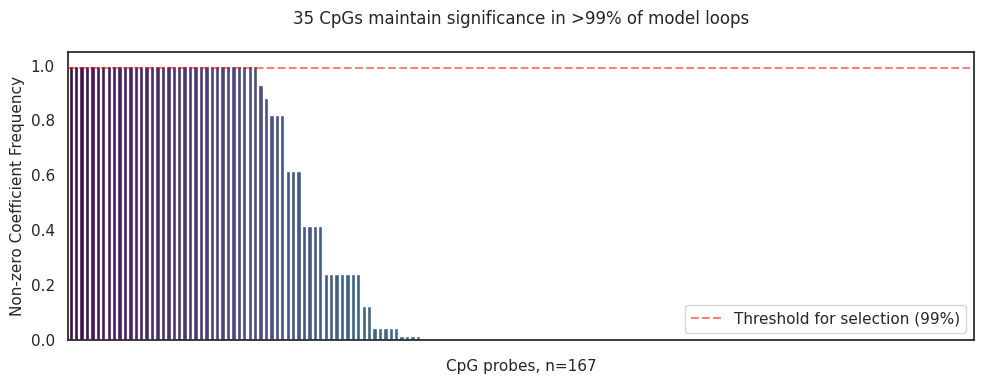
Save table of 35 CpGs coefficients with EWAS results#
Show code cell source
# Load `ewas_cpgs_top_OS_with_EFSinfo.xlsx`
ewas_cpgs_top_OS_with_EFSinfo = pd.read_excel('data/ewas_cpgs_top_OS_with_EFSinfo.xlsx', index_col=0)\
.join(mean_coefs.to_frame('MethylScoreAML Px Coefs')).sort_values('MethylScoreAML Px Coefs', ascending=False)\
.to_excel('data/ewas_cpgs_top_OS_with_EFSinfo_with_MethylScoreAML_Px_Coefs.xlsx')
Generate Model Results#
Discovery Dataset#
Show code cell source
score_name = 'MethylScoreAML_Px'
df, threshold = generate_coxph_score(coef_mean=mean_coefs,
x=x_test_m_z,
df=discovery_clinical_data,
score_name=score_name,
train_test="train",
rpart_outcome='os.time')
Continuous score cut at the value of 0.2208 for ['Other', 'Normal', 'MLL', 'inv(16)', 't(8;21)', nan]
Show code cell source
sns.histplot(data=df,x=score_name, bins=50, hue = score_name + ' Categorical' )
# add vertical line at threshold and third quartile
plt.axvline(threshold ,color='blue', linestyle='--')
plt.axvline(df[score_name].quantile(0.6), color='red', linestyle='--')
# add legend
plt.legend({'RPart':threshold, '60%-40%':df[score_name].quantile(0.6)})
plt.title('Distribution of ' + score_name + ' in COG trials')
Text(0.5, 1.0, 'Distribution of MethylScoreAML_Px in COG trials')
Show code cell source
import seaborn as sns
import matplotlib.pyplot as plt
# create scatterplot
sns.scatterplot(data=df, x=score_name, y='os.time', alpha=0.8)
# use hexbin plot to show density
ax = plt.gca()
ax.hexbin(df[score_name], df['os.time'], gridsize=50, cmap='Blues')
# add title
plt.title('Hexbin Scatterplot of {} in COG trials'.format(score_name))
# add vertical line at threshold
plt.axvline(threshold, color='red', linestyle='--', label='Threshold')
plt.legend()
# save plot as png
# plt.savefig(path + '/Hexbin_Scatterplot_{}_efs.time_{}.png'.format(score_name, len(df)),
# bbox_inches='tight', dpi=300)
plt.show()
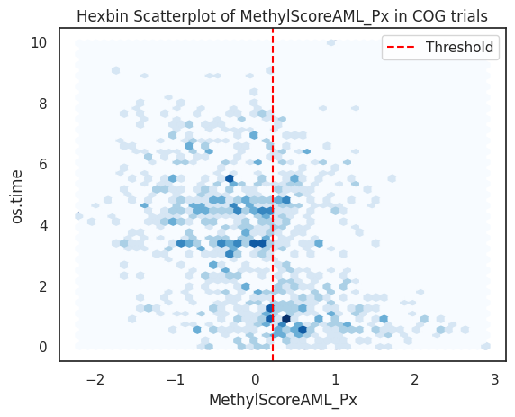
Kaplan-Meier Plots#
Overall study population#
Show code cell source
# Import Plotting Functions
from source.data_visualization_functions import *
draw_kaplan_meier(scorename=score_name,
df=df,
save_plot=False,
save_survival_table=False,
add_risk_counts=False,
trialname='COG trials')
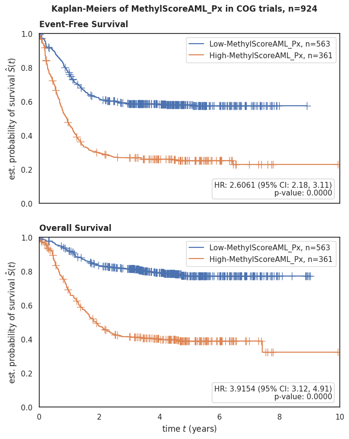
Per risk group#
Show code cell source
draw_kaplan_meier(scorename=score_name,
df=df[df['Risk Group'] == 'High Risk'],
save_plot=False,
save_survival_table=False,
add_risk_counts=False,
trialname='COG trials, High Risk Group')
draw_kaplan_meier(scorename=score_name,
df=df[df['Risk Group'] == 'Low Risk'],
save_plot=False,
save_survival_table=False,
add_risk_counts=False,
trialname='COG trials, Low Risk Group')
draw_kaplan_meier(scorename=score_name,
df=df[df['Risk Group'] == 'Standard Risk'],
save_plot=False,
save_survival_table=False,
add_risk_counts=False,
trialname='COG trials, Standard Risk Group')
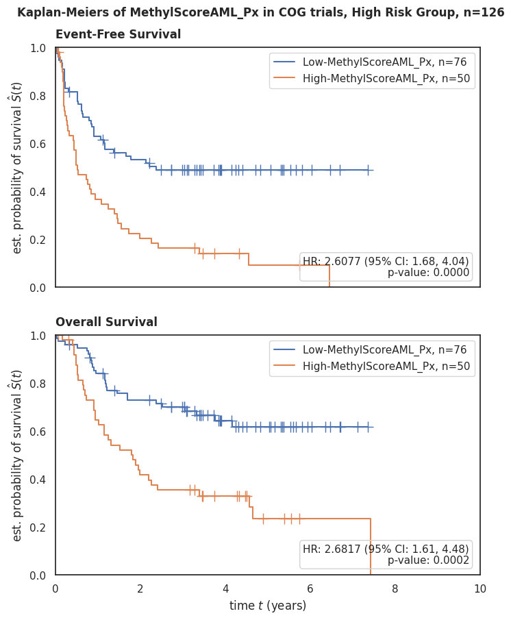
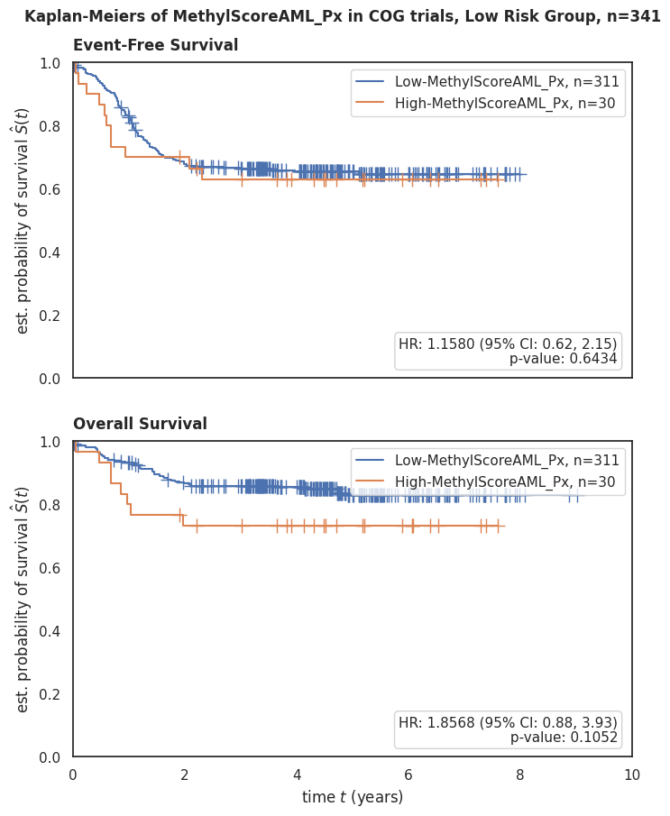
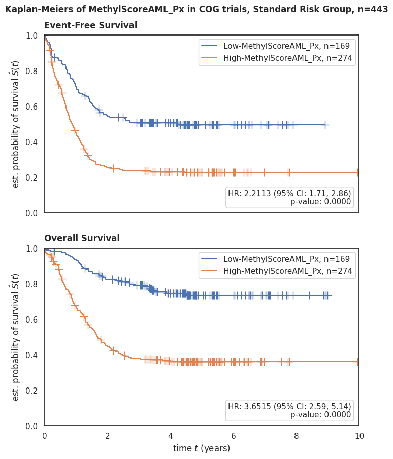
Forest Plots#
With MRD 1#
Show code cell source
draw_forest_plot(time='os.time',
event='os.evnt',
df=df,
trialname='COG trials:',
scorename=score_name,
save_plot=False)
draw_forest_plot(time='efs.time',
event='efs.evnt',
df=df,
trialname='COG trials:',
scorename=score_name,
save_plot=False)
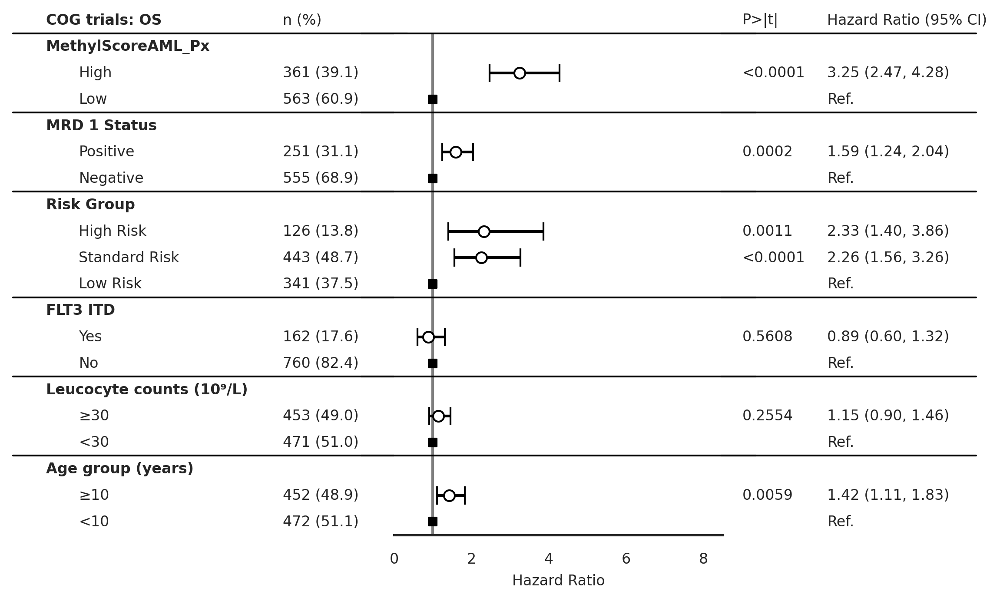
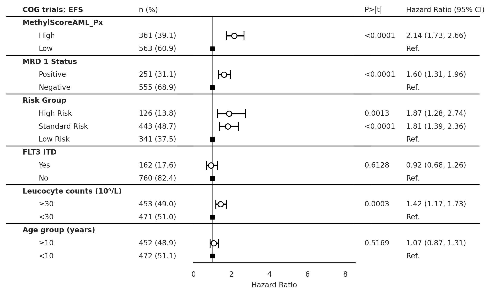
Without MRD 1#
Show code cell source
draw_forest_plot_noMRD(time='os.time',
event='os.evnt',
df=df,
trialname='COG trials:',
scorename=score_name,
save_plot=False)
draw_forest_plot_noMRD(time='efs.time',
event='efs.evnt',
df=df,
trialname='COG trials:',
scorename=score_name,
save_plot=False)
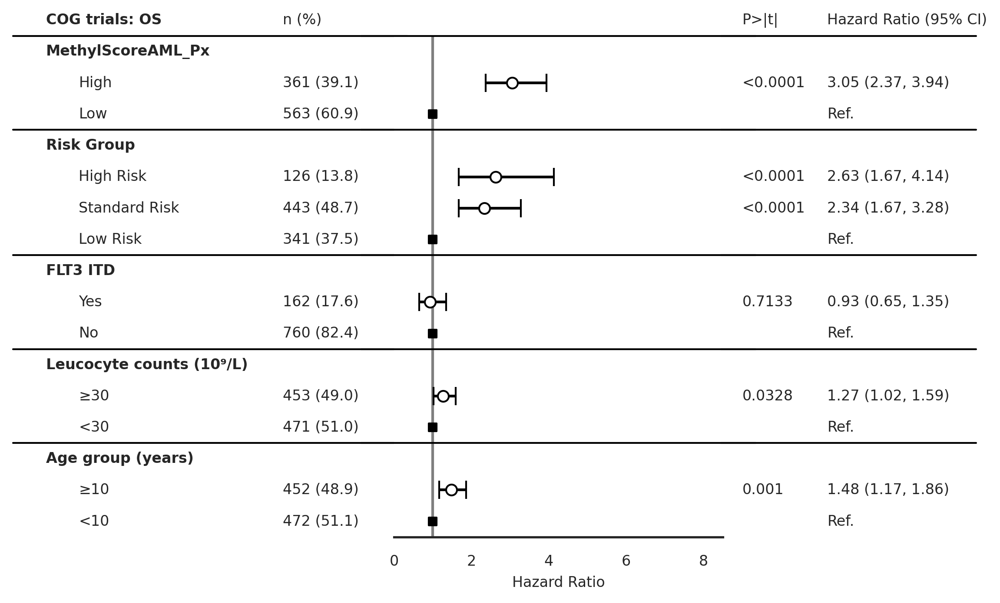

ROC AUC#
Show code cell source
# Your current preprocessing
df['Risk Group bins'] = df['Risk Group'].replace({'Low Risk':0, 'Standard Risk':0.5, 'High Risk':1})
df['MRD 1 bins'] = df['MRD 1 Status'].replace({'Negative':0, 'Positive':1})
df2 = df[['os.evnt', 'MethylScoreAML_Px_cat_bin', 'Risk Group bins', 'MRD 1 bins']].dropna()
# rename column `MethylScoreAML_Px_cat_bin` to `MethylScoreAML Px`
df2 = df2.rename(columns={'MethylScoreAML_Px_cat_bin':'MethylScoreAML_Px'})
# Add new columns based on standardized values
df2['MRD1 + Risk Group'] = df['MRD 1 bins'] + df['Risk Group bins']
df2['MRD1 + Risk Group + MethylScore'] = df['MRD 1 bins'] + df['Risk Group bins'] + df['MethylScoreAML_Px']
import matplotlib.pyplot as plt
from sklearn.metrics import roc_curve, auc
from sklearn.preprocessing import LabelBinarizer
def plot_roc_auc(df, score_columns, outcome_column, trial_name='discovery cohort'):
"""
Plots the ROC AUC curves for multiple models given a dataframe and multiple score columns.
Parameters:
- df (pd.DataFrame): Dataframe containing the score and outcome columns.
- score_columns (list of str): List of names of columns that contain the scores.
- outcome_column (str): The name of the column that contains the true outcomes.
Returns:
None
"""
plt.figure()
plt.title('ROC AUC in ' + trial_name + ', n={}'.format(len(df)))
# plot random guessing line
plt.plot([0, 1], [0, 1], 'r--')
# binarize the outcome variable
lb = LabelBinarizer()
lb.fit(df[outcome_column])
y = lb.transform(df[outcome_column])
# Loop over score_columns to plot multiple ROC curves
for score_column in score_columns:
# calculate the fpr and tpr for all thresholds of the classification
fpr, tpr, threshold = roc_curve(y, df[score_column])
roc_auc = auc(fpr, tpr)
# plot ROC curve for this score_column
plt.plot(fpr, tpr, label=f'{score_column} AUC = %0.2f' % roc_auc)
# set x and y limits
plt.xlim([0, 1])
plt.ylim([0, 1])
# set x and y labels
plt.ylabel('True Positive Rate')
plt.xlabel('False Positive Rate')
# add legend
plt.legend(loc='lower right')
plt.show()
# Example Usage:
score_columns = ['MethylScoreAML_Px', 'Risk Group bins', 'MRD 1 bins', 'MRD1 + Risk Group', 'MRD1 + Risk Group + MethylScore']
outcome_column = 'os.evnt'
plot_roc_auc(df2, score_columns, outcome_column)
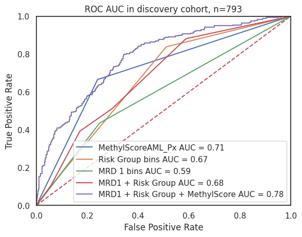
Box Plots#
Show code cell source
draw_boxplot(df=discovery_clinical_data,x='Risk Group', y=score_name,
order=['High Risk', 'Standard Risk', 'Low Risk'],
trialname='COG', hue=score_name + ' Categorical',
save_plot=False, figsize=None)
draw_boxplot(df=discovery_clinical_data,x='MRD 1 Status', y=score_name,
order=['Positive','Negative'],
trialname='COG', hue=score_name + ' Categorical',
save_plot=False, figsize=None)
draw_boxplot(df=discovery_clinical_data,x='Primary Cytogenetic Code', y=score_name,
order='auto',
trialname='COG', hue=score_name + ' Categorical',
save_plot=False, figsize=None)
p-value annotation legend:
ns: p <= 1.00e+00
*: 1.00e-02 < p <= 5.00e-02
**: 1.00e-03 < p <= 1.00e-02
***: 1.00e-04 < p <= 1.00e-03
****: p <= 1.00e-04
High Risk vs. Standard Risk: Kruskal-Wallis independent samples (pairwise between groups) with Bonferroni correction, P_val:3.325e-07 Stat=2.817e+01
Standard Risk vs. Low Risk: Kruskal-Wallis independent samples (pairwise between groups) with Bonferroni correction, P_val:4.225e-79 Stat=3.568e+02
High Risk vs. Low Risk: Kruskal-Wallis independent samples (pairwise between groups) with Bonferroni correction, P_val:4.232e-27 Stat=1.184e+02
p-value annotation legend:
ns: p <= 1.00e+00
*: 1.00e-02 < p <= 5.00e-02
**: 1.00e-03 < p <= 1.00e-02
***: 1.00e-04 < p <= 1.00e-03
****: p <= 1.00e-04
Positive vs. Negative: Kruskal-Wallis independent samples (pairwise between groups) with Bonferroni correction, P_val:2.989e-05 Stat=1.742e+01
Stacked Bar Plots#
Show code cell source
draw_stacked_barplot(df=discovery_clinical_data,x='MRD 1 Status', y=score_name,
order=['Positive','Negative'],
trialname='COG', hue=score_name + ' Categorical',
save_plot=False, figsize=None)
draw_stacked_barplot(df=discovery_clinical_data,x='Risk Group', y=score_name,
order=['High Risk', 'Standard Risk', 'Low Risk'],
trialname='COG', hue=score_name + ' Categorical',
save_plot=False, figsize=None, fontsize=9)
draw_stacked_barplot(df=discovery_clinical_data,x='Primary Cytogenetic Code', y=score_name,
order='auto',
trialname='COG', hue=score_name + ' Categorical',
save_plot=False, figsize=None, fontsize=8)
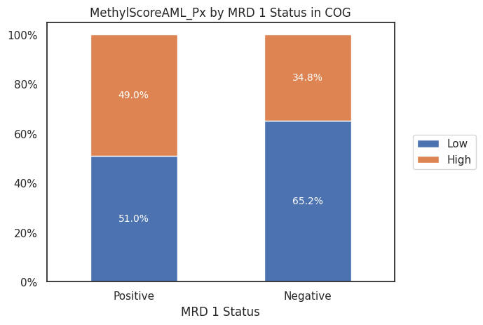
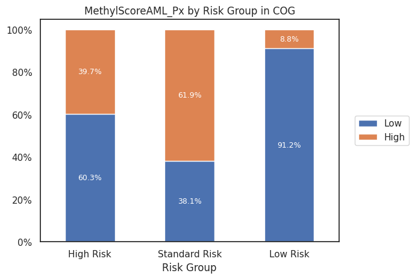
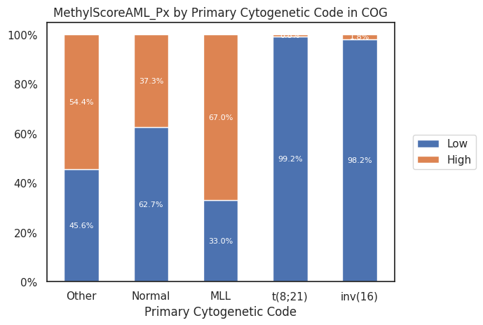
Patient Characteristics Table#
Overall study population#
Show code cell source
from tableone import TableOne
columns = ['Age (years)','Age group (years)','Sex','Race or ethnic group',
'Hispanic or Latino ethnic group', 'MRD 1 Status',
'Leucocyte counts (10⁹/L)', 'BM Leukemic blasts (%)',
'Risk Group', 'Clinical Trial','FLT3 ITD']
discovery_clinical_data['Age (years)'] = discovery_clinical_data['Age (years)'].astype(float)
mytable_cog = TableOne(discovery_clinical_data, columns,
overall=False, missing=True,
pval=False, pval_adjust=False,
htest_name=True,dip_test=True,
tukey_test=True, normal_test=True,
order={'FLT3 ITD':['Yes','No'],
'Race or ethnic group':['White','Black or African American','Asian'],
'MRD 1 Status': ['Positive'],
'Risk Group': ['High Risk', 'Standard Risk'],
'FLT3 ITD': ['Yes'],
'Leucocyte counts (10⁹/L)': ['≥30'],
'Age group (years)': ['≥10']})
# mytable_cog.to_csv(output_path + 'multivariate_cox_lasso/tableone_discovery_cohort.csv')
mytable_cog.tabulate(tablefmt="html",
headers=[score_name,"",'Missing','Discovery Cohort','Low','p-value','Statistical Test'])
| MethylScoreAML_Px | Missing | Discovery Cohort | |
|---|---|---|---|
| n | 924 | ||
| Age (years), mean (SD) | 0 | 9.4 (6.3) | |
| Age group (years), n (%) | ≥10 | 0 | 452 (48.9) |
| <10 | 472 (51.1) | ||
| Sex, n (%) | Female | 0 | 457 (49.5) |
| Male | 467 (50.5) | ||
| Race or ethnic group, n (%) | White | 63 | 680 (79.0) |
| Black or African American | 100 (11.6) | ||
| Asian | 42 (4.9) | ||
| American Indian or Alaska Native | 5 (0.6) | ||
| Native Hawaiian or other Pacific Islander | 6 (0.7) | ||
| Other | 28 (3.3) | ||
| Hispanic or Latino ethnic group, n (%) | Hispanic or Latino | 28 | 179 (20.0) |
| Not Hispanic or Latino | 717 (80.0) | ||
| MRD 1 Status, n (%) | Positive | 118 | 251 (31.1) |
| Negative | 555 (68.9) | ||
| Leucocyte counts (10⁹/L), n (%) | ≥30 | 0 | 453 (49.0) |
| <30 | 471 (51.0) | ||
| BM Leukemic blasts (%), mean (SD) | 65 | 64.0 (24.4) | |
| Risk Group, n (%) | High Risk | 14 | 126 (13.8) |
| Standard Risk | 443 (48.7) | ||
| Low Risk | 341 (37.5) | ||
| Clinical Trial, n (%) | AAML03P1 | 0 | 36 (3.9) |
| AAML0531 | 491 (53.1) | ||
| AAML1031 | 397 (43.0) | ||
| FLT3 ITD, n (%) | Yes | 2 | 162 (17.6) |
| No | 760 (82.4) |
By MethylScore category#
Show code cell source
from tableone import TableOne
columns = ['Age (years)','Age group (years)','Sex','Race or ethnic group',
'Hispanic or Latino ethnic group', 'MRD 1 Status',
'Leucocyte counts (10⁹/L)', 'BM Leukemic blasts (%)',
'Risk Group', 'Clinical Trial','FLT3 ITD']
discovery_clinical_data['Age (years)'] = discovery_clinical_data['Age (years)'].astype(float)
mytable_cog = TableOne(discovery_clinical_data, columns,
overall=False, missing=True,
pval=True, pval_adjust=False,
htest_name=True,dip_test=True,
tukey_test=True, normal_test=True,
order={'FLT3 ITD':['Yes','No'],
'Race or ethnic group':['White','Black or African American','Asian'],
'MRD 1 Status': ['Positive'],
'Risk Group': ['High Risk', 'Standard Risk'],
'FLT3 ITD': ['Yes'],
'Leucocyte counts (10⁹/L)': ['≥30'],
'Age group (years)': ['≥10']},
groupby=score_name + ' Categorical')
mytable_cog.to_csv(output_path + 'multivariate_cox_lasso/tableone_discovery_methylscoreaml_px.csv')
mytable_cog.to_excel('data/tableone_discovery_methylscoreaml_px.xlsx')
mytable_cog.tabulate(tablefmt="html",
headers=[score_name,"",'Missing','High','Low','p-value','Statistical Test'])
| MethylScoreAML_Px | Missing | High | Low | p-value | Statistical Test | |
|---|---|---|---|---|---|---|
| n | 563 | 361 | ||||
| Age (years), mean (SD) | 0 | 10.1 (6.1) | 8.4 (6.5) | <0.001 | Two Sample T-test | |
| Age group (years), n (%) | ≥10 | 0 | 297 (52.8) | 155 (42.9) | 0.004 | Chi-squared |
| <10 | 266 (47.2) | 206 (57.1) | ||||
| Sex, n (%) | Female | 0 | 277 (49.2) | 180 (49.9) | 0.898 | Chi-squared |
| Male | 286 (50.8) | 181 (50.1) | ||||
| Race or ethnic group, n (%) | White | 63 | 416 (79.2) | 264 (78.6) | 0.106 | Chi-squared (warning: expected count < 5) |
| Black or African American | 52 (9.9) | 48 (14.3) | ||||
| Asian | 26 (5.0) | 16 (4.8) | ||||
| American Indian or Alaska Native | 4 (0.8) | 1 (0.3) | ||||
| Native Hawaiian or other Pacific Islander | 5 (1.0) | 1 (0.3) | ||||
| Other | 22 (4.2) | 6 (1.8) | ||||
| Hispanic or Latino ethnic group, n (%) | Hispanic or Latino | 28 | 114 (20.9) | 65 (18.6) | 0.449 | Chi-squared |
| Not Hispanic or Latino | 432 (79.1) | 285 (81.4) | ||||
| MRD 1 Status, n (%) | Positive | 118 | 128 (26.1) | 123 (38.9) | <0.001 | Chi-squared |
| Negative | 362 (73.9) | 193 (61.1) | ||||
| Leucocyte counts (10⁹/L), n (%) | ≥30 | 0 | 292 (51.9) | 161 (44.6) | 0.037 | Chi-squared |
| <30 | 271 (48.1) | 200 (55.4) | ||||
| BM Leukemic blasts (%), mean (SD) | 65 | 62.0 (24.2) | 67.1 (24.6) | 0.003 | Two Sample T-test | |
| Risk Group, n (%) | High Risk | 14 | 76 (13.7) | 50 (14.1) | <0.001 | Chi-squared |
| Standard Risk | 169 (30.4) | 274 (77.4) | ||||
| Low Risk | 311 (55.9) | 30 (8.5) | ||||
| Clinical Trial, n (%) | AAML03P1 | 0 | 26 (4.6) | 10 (2.8) | 0.117 | Chi-squared |
| AAML0531 | 286 (50.8) | 205 (56.8) | ||||
| AAML1031 | 251 (44.6) | 146 (40.4) | ||||
| FLT3 ITD, n (%) | Yes | 2 | 114 (20.3) | 48 (13.3) | 0.009 | Chi-squared |
| No | 448 (79.7) | 312 (86.7) |
Fetch gene annotation#
Show code cell source
# Load manifest
zhou2016_probes = pd.read_csv('../Data/UnreliableProbesList_Zhou2016/EPIC.anno.GRCh38.tsv',
sep='\t',index_col=0)[['chrm','start', 'end', 'GeneNames','GeneClasses','CGIPosition']]
# Get probes from Zhou et al. (2016) that are in ewasOS_un.index
mean_coefs_genes = zhou2016_probes.loc[list(ewas_top_cpgs.columns)]\
.join(mean_coefs.to_frame('MethylScore Coefficients'), how='left')\
.sort_values(by='MethylScore Coefficients', ascending=False)
# `GeneNames`, `GeneClasses`, and `TranscriptIDs` columns contain multiple genes separated by `;` so we need to keep only the unique ones
mean_coefs_genes['GeneNames'] = mean_coefs_genes['GeneNames'].apply(lambda x: ';'.join(set(x.split(';'))))
mean_coefs_genes['GeneClasses'] = mean_coefs_genes['GeneClasses'].apply(lambda x: ';'.join(set(x.split(';'))))
# Transform `GeneNames` values separated by `;` into a list
mean_coefs_genes['GeneNames'] = mean_coefs_genes['GeneNames'].apply(lambda x: x.split(';'))
# If there are multiple genes in `GeneNames` or `GeneClasses`, we will add one row for each gene
mean_coefs_genes = mean_coefs_genes.explode('GeneNames')
# Save the dataframe to a CSV file
mean_coefs_genes.to_excel('data/MethylScoreAML_Px_167_cpg_genes.xlsx')
mean_coefs_genes.to_csv(output_path + 'multivariate_cox_lasso/methylScore_coxph_167_cpg_signature.csv')
from itables import show
show(mean_coefs_genes, classes="display nowrap cell-border")
| chrm | start | end | GeneNames | GeneClasses | CGIPosition | MethylScore Coefficients | |
|---|---|---|---|---|---|---|---|
| probeID | |||||||
| Loading... (need help?) |
Watermark#
Author: Francisco_Marchi@Lamba_Lab_UF
Python implementation: CPython
Python version : 3.8.16
IPython version : 8.12.2
pandas : 2.0.2
seaborn : 0.12.2
matplotlib : 3.7.1
tableone : 0.7.12
sklearn : 1.2.2
lifelines : 0.27.7
statannotations: 0.5.0
Compiler : GCC 11.3.0
OS : Linux
Release : 5.15.90.1-microsoft-standard-WSL2
Machine : x86_64
Processor : x86_64
CPU cores : 20
Architecture: 64bit